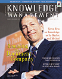

|
 February 2000 Subscribe e-Mail the Editor |
Accumulating Knowledge EfficiencyThe ratio of Knowledge Capital accumulation to spending on information management tracks with market valuation.By Paul A. Strassmann
Most discussions of knowledge management and related subjects end up advocating spending on innovative information technologies. What used to be peddled on their technical merits now must be relabeled as a way to increase a firm's capacity to accumulate knowledge. To illustrate this point, I got hold of a presentation Bill Gates gave last May to CEOs of some of the most powerful global corporations. It was about making greater use of information technologies, including suggestions to make e-mail part of your culture; move paper forms to electronic; create an online corporate memory; redesign how meetings are done; and provide "digital dashboards." It amounted to a fancy rebundling of Microsoft Excel, PowerPoint and Outlook. One of the attendees was Jack Welch, CEO of General Electric, who must have wondered what it would cost to add "digital dashboards" to the desktops of GE's 293,000 employees. I estimate that it would cost $400 million to $600 million, which, if spread over several years, would consume about one-quarter of the firm's IT budget. Yet an even larger problem than the costs would be discerning and measuring the benefits of doing it. What would be the gain in the knowledge of GE employees? In a prior article ["What's the Worth of an Employee?," December 1999 KMM], I showed that it is feasible to calculate the value of Knowledge Capital (KC) per employee. If that calculation is repeated over an extended period, one can make period-to-period comparisons and determine whether a corporation is gaining or losing this valuable asset. It also follows that a big corporation could show greater gains than smaller but superior competitors, so we need a metric that permits comparisons across a range of firms with dissimilar financial structures. When ranking competitors, it should not be the absolute amount of KC that matters but the relative efficiency with which they gain or lose their "smarts." Efficiency is the ratio of output over input. The gains in KC over an extended time should be the measure of outputs, but what should be the metric of inputs when calculating a KC accumulation efficiency ratio? As I wrote last month ["When Spending is Investing," January KMM], some information management activities take place without having lasting effects on the behavior of employees, customers or suppliers, in which case the costs should be recorded as operating expenses and deducted from revenues. On the other hand, information management activities that create long-term influences on the behavior of employees, customers and suppliers should be seen as an accumulation of KC and be accounted for on the balance sheet as a depreciable asset. If you accept this view of how accounting should reflect realities, then KC accumulation efficiency is the ratio of the difference in KC as divided by the corresponding cumulative cost of information management. In prior articles, I used five leading pharmaceutical firms to illustrate calculations of KC metrics. The calculation of KC accumulation efficiency offers useful insights: First, effective management of information makes it possible to generate greater amounts of KC than it costs to produce. For instance, Merck was able to gain $61.4 billion with an expenditure of only $38.4 billion. KC accumulation efficiency in excess of 100 percent can be seen as an indicator of the capacity to create wealth out of limited resources. Second, high spending levels for IT do not necessarily produce high KC accumulation efficiencies. I have shown that Warner-Lambert actually delivers less KC than it spends to create it; for $29.2 billion of information management, it has only gained $11.6 billion. KC accumulation efficiency of less than 50 percent can be seen as evidence of a degraded capacity to produce wealth. The inability to generate Knowledge Capital efficiently will be increasingly viewed as an indication for changing management. While I was writing this column, Pfizer made a hostile bid for Warner-Lambert for $77 billion. Assuming that Pfizer can bring Warner-Lambert closer to Pfizer levels of knowledge generation, the bid makes a great deal of sense. The price confirms my analysis that it is not the sum of the value of individuals that explains the valuation of a firm. What matters is how management can organize individuals to free their intrinsic capabilities to create wealth. Because KC accumulation efficiency is a critically important metric in judging the economic performance of firms, next month I will look at trends involving this ratio at more than 3,000 U.S. corporations. I will show that only a small fraction of firms are major generators of Knowledge Capital. Despite the euphoria about the "new economy," I do not believe that we have reached a stage at which we can create huge new wealth from very little spending. Paul A. Strassmann originated the trademarked concepts "information productivity," "return-on-management" and "knowledge capital." |